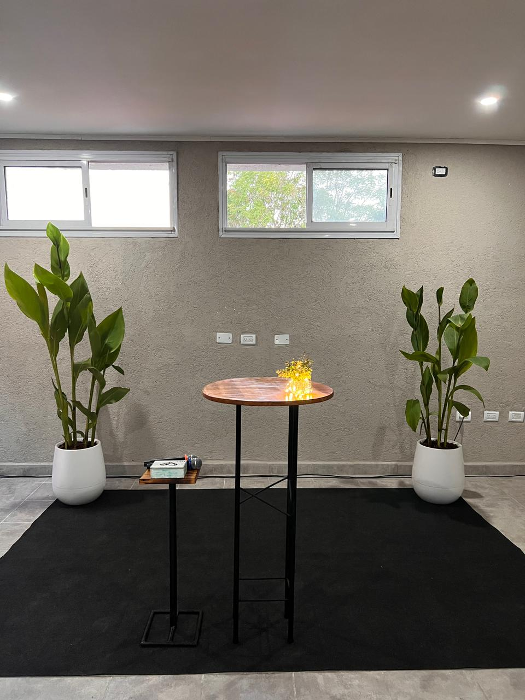
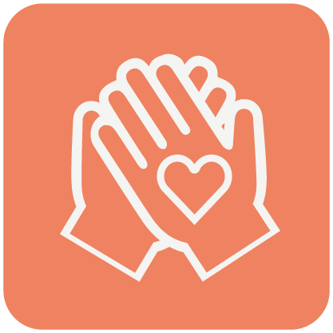

Centro de Recuperación
Hay esperanza, hay sanidad, hay un nuevo comienzo


Nuestro Centro de Recuperación es un ministerio cristiano dedicado a ayudar a personas que luchan con adicciones y desean cambiar sus vidas. Ofrecemos un programa integral basado en principios bíblicos, terapia profesional y apoyo comunitario.
Creemos que cada persona puede experimentar una transformación completa a través del poder de Dios. Nuestro enfoque combina la restauración espiritual, emocional y física, brindando las herramientas necesarias para una recuperación duradera.
El programa está diseñado para proporcionar un ambiente seguro, estructurado y lleno de amor donde las personas puedan sanar, crecer y descubrir su verdadero propósito.
Tratamiento espiritual, emocional y físico para una recuperación completa.

Un ambiente de hermandad donde nadie camina solo en su proceso.
Horarios y actividades diseñadas para fomentar disciplina y crecimiento.
Un espacio cómodo y seguro para enfocarse en la recuperación.
Enseñanzas bíblicas aplicadas a la vida diaria y el proceso de recuperación.
Sesiones personalizadas con consejeros capacitados.
Reuniones grupales para compartir experiencias y fortalecerse mutuamente.
Apoyo continuo en cada dia por sus mentores.
El programa tiene una duración aproximada de 6 meses.
No, es totalmente gratuito.
Cualquier persona que desee cambiar su vida y recibir ayuda.
No es necesario ser cristiano para ingresar, pero nuestro programa está basado en principios bíblicos y la participación en las actividades espirituales es obligatoria. Respetamos a cada persona donde está en su viaje espiritual.
"Llegué sin esperanza, destruido por la adicción. Este lugar me devolvió la vida. Aprendí que Dios tiene un propósito para mí. Ahora tengo 18 meses sobrio y una familia restaurada. ¡Gracias por no rendirse conmigo!"
"El centro me dio las herramientas que necesitaba para cambiar. La combinación de apoyo espiritual, consejería profesional y comunidad genuina hizo la diferencia. Hoy trabajo, estoy con mi familia y sirvo en la iglesia."